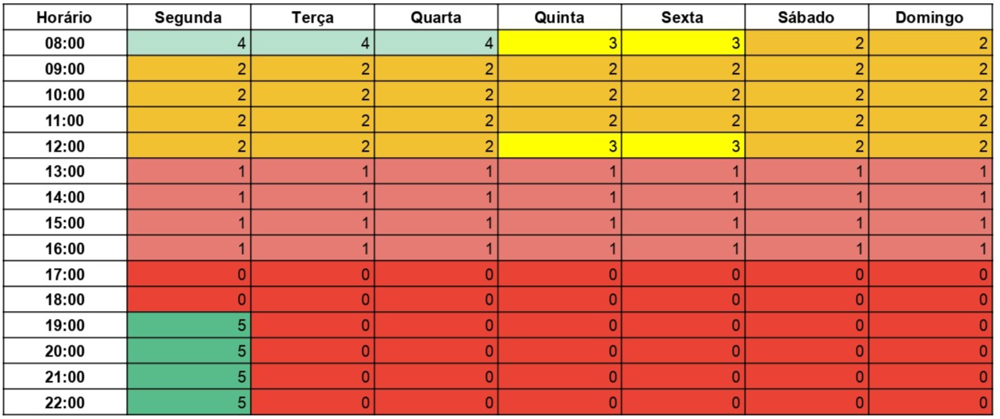

| Controle de Versões | |||
|---|---|---|---|
| Versão | Data | Autor | Notas da Revisão |
| 1.0 | 19/08/2024 | Ana Julia Alves, Letícia Caixeta, Manuela Oliveira, Paula Nascimento, Vitória Cristina | Elaboração Inicial do Plano Metodológico |
| 2.0 | 28/08/2024 | Ana Julia Alves, Letícia Caixeta, Manuela Oliveira, Paula Nascimento, Vitória Cristina | Elaboração Inicial do Plano Metodológico |
Esse documento descreve o plano metodológico que será seguido no desenvolvimento do projeto “Deu Pet”, relativo à disciplina Projeto e Desenvolvimento de Sistemas 1.
Nesse documento, serão expostos fatores levados em conta no planejamento, como recursos de hardware e software, gerenciamento do pessoal da equipe, divisão de horário de trabalho, detalhes dos módulos, assim também como uma estimativa do cronograma e restrições.
A equipe usará o conteúdo deste documento como guia de orientação visando elaborar um projeto fiel ao planejamento prévio.
Neste documento apresenta-se o plano geral do sistema “Deu Pet”, que visa conectar ONGs e protetores de animais a pessoas interessadas na adoção de cães e gatos.
O cronograma do projeto completo inclui 2 semestres, sendo o primeiro destinado a questões de planejamento, análise e projeto. De modo específico, o primeiro semestre terá 16 semanas, que serão destinadas ao modelo de processos de desenvolvimento em cascata, isto é, todo o fluxo de trabalho será organizado de forma sequencial.
No segundo semestre será abordado a metodologia de desenvolvimento ágil Scrum.
As atividades do projeto serão desenvolvidas por cinco integrantes.
Todos os artefatos do projeto serão documentados e disponibilizados no GitHub Pages.
O projeto possui prazo de entrega final que está datado para 11 de novembro de 2024, e será apresentado na disciplina Projeto e Desenvolvimento de Sistemas 1.
Em seu cronograma, o projeto inclui ainda quatro outras datas para entrega do Repositório Online, como exibido abaixo:
A equipe de desenvolvimento é composta por cinco componentes que está dividida em:
Esse Roadmap pode ser visualizado em: Roadmap deuPet!
Serão desenvolvidas versões do sistema, que serão implementadas conforme forem sendo adicionadas as funcionalidades, e ao longo das alterações que forem sendo realizadas.
Todos os dias serão realizadas reuniões de até 15 minutos onde todos os membros da equipe estarão envolvidos e cada um responderá as seguintes perguntas: "O que foi feito?", "O que será feito?", "Quais foram as dificuldades?"
Ao final de cada sprint ocorrerão reuniões de demonstração para validar os incrementos do sistema, onde cada um da equipe apresentará o que foi feito. Esses encontros possuem duração prevista de até 1 hora cada.
Teremos reunião de retrospectiva, que ocorrerão ao final de cada sprint e terão a duração de até 1 hora cada. Todos os membros da equipe estarão presentes e os tópicos:
Serão documentados em um relatório de lições aprendidas.
As partes interessadas utilizarão como canal de comunicação a plataforma Microsoft Teams e e-mail.
Para o planejamento e monitoramento das tarefas, cronograma e papéis do projeto, será utilizada a ferramenta JIRA. O JIRA é uma poderosa ferramenta de gerenciamento de projetos, especialmente popular em ambientes que adotam metodologias ágeis como o Scrum. As tarefas serão criadas e atribuídas no JIRA, permitindo que cada membro da equipe visualize suas responsabilidades de forma clara. Além disso, a ferramenta fornecerá um cronograma visual através de sprints e roadmaps, que serão configurados para acompanhar o progresso de cada tarefa ao longo do tempo. Cada sprint terá um cronograma claro, com datas de início e término bem definidas.
Usaremos mapa de calor para visualizar a concentração de esforço, riscos, ou desempenho em diferentes áreas do projeto, permitindo uma análise rápida de onde estão os focos de atividade ou problemas.